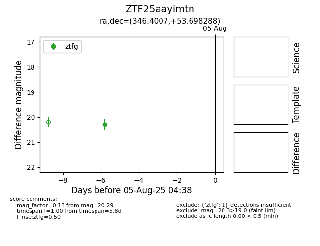

Target ZTF25aayimtn at 2025-08-05 04:38, see:
FINK: fink-portal.org/ZTF25aayimtn
Lasair: lasair-ztf.lsst.ac.uk/objects/ZTF25aayimtn
ALeRCE: alerce.online/object/ZTF25aayimtn
alt names
ZTF25aayimtn (ztf,fink)
coordinates:
equatorial (ra, dec) = (346.4007,+53.69829)
galactic (l, b) = (107.5514,-5.98299)
photometry
last ztfg=20.29
1 ztfg detections
